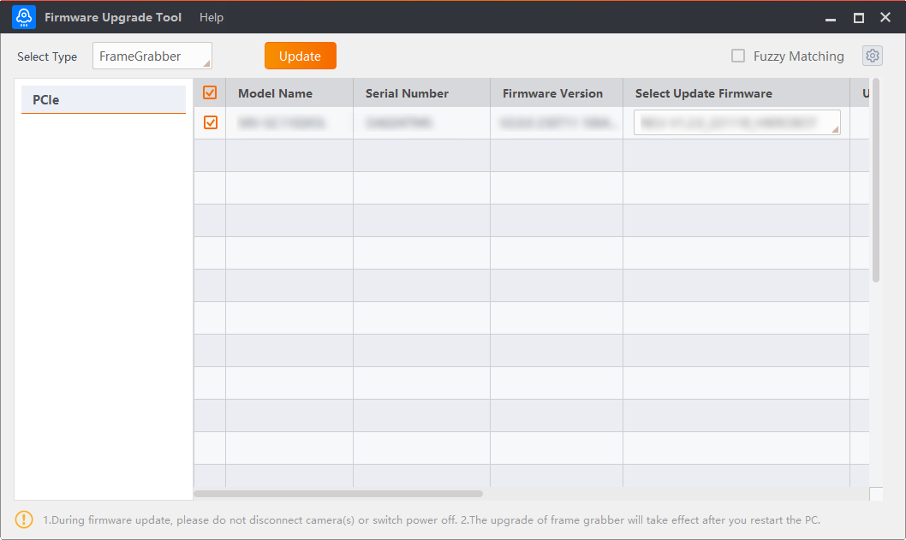
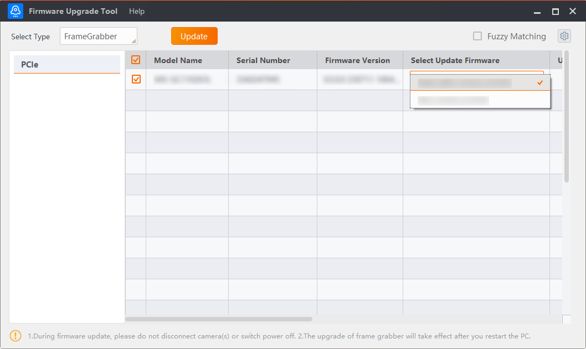
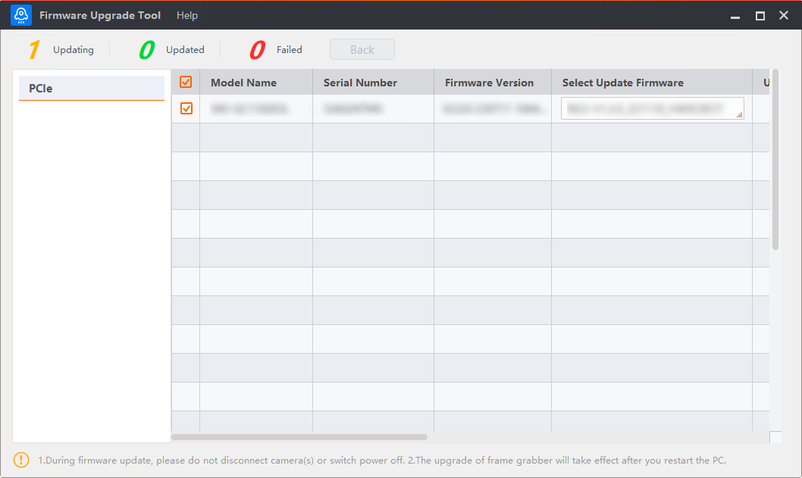

The frame grabber firmware upgrading process mainly contains three parts, and they are Search for Device, Start to Upgrade, and View Upgrading Status.
After you open the tool, select FrameGrabber in Select Type, and all connected PCIe devices displays on the left.
By default, the Tool automatically enumerates connected frame grabbers every 30 seconds. You can also click to re-enumerate.

Figure 1 Upgrade Frame Grabber FirmwarePlease visit Hikrobot official website to get the firmware driver packages of the to-be-upgraded frame grabbers.
Before upgrading, ensure the frame grabber(s) to be upgraded are available during upgrading process.
Install the firmware driver under the directory: C:\Program Files (x86)\Common Files\MVS\FirmWare.
Once installed, the Tool detects and displays available firmwares, as shown below.

Figure 2 Upgrade Frame GrabberSelect frame grabber(s) to be upgraded.
Select required firmware in Select Update Firmware for each frame grabber.
The Tool supports upgrading up-to-20 frame grabbers in a batch.
The Tool supports fuzzy searching of firmware files. To enable this functionality, enable Fuzzy Matching.
Click Upgrade to upgrade them.
Keep the device(s) connected when upgrading.
The frame grabber(s) will reboot automatically when upgraded.
Once the upgrading starts, you can view the status on top, as shown below. The upgrading progress also displays in Update Status.
In case of upgrading failure, you can click Back to return to the initial window and redo the upgrading.

Figure 3 Upgrading Frame Grabber